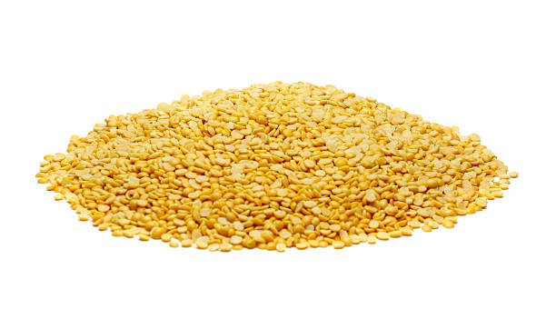

Chickpeas, known as gram or chana, are a vital legume in Indian agriculture, valued for their
nutritional benefits and adaptability. Here’s a detailed step-by-step mechanism of their growth from
seed selection to harvesting:
1] Seed Selection and Sowing: Select high-quality, disease-resistant seeds. Treat seeds with
fungicides to minimize soil-borne diseases.Sow seeds in late October to early November, depending on the
region.Plant seeds 1.5 to 2 inches deep in well-drained, loamy soil, spaced 30-35 cm apart in
rows.
2] Germination:
After sowing, seeds absorb moisture and begin germinating.The radicle (embryonic root) emerges first,
followed by the shoot.Germination occurs best at soil temperatures between 10°C to 15°C, taking about 7
to 10 days.
3] Vegetative Growth:
The chickpea plant develops deep roots and erect stems with compound leaves.This stage lasts about 30-40
days, with the plant growing 30-60 cm tall.Nitrogen-fixing nodules form on the roots, enhancing soil
fertility.
4] Branching and Flowering:
Around 40-45 days post-sowing, branching begins.Small white or pink flowers develop shortly after, with
self-pollination occurring within the flowers.Increased branching leads to more flowers and
pods.
5] Pod Formation:
Pods begin forming 60-70 days after sowing, each containing 1-2 seeds.Adequate water is crucial during
this phase, though chickpeas are moderately drought-tolerant.
6] Pest and Disease Management:
Monitor for pests like pod borers and diseases such as wilt.Use neem-based bio-pesticides or chemical
treatments as needed.Crop rotation with cereals helps prevent diseases.
7] Seed Development:
As pods mature, seeds grow and harden over 20-30 days.The plants start drying, indicating seed
maturation.
8] Harvesting:
Harvest when the plants are brown and pods are fully dried, typically 100-110 days
post-sowing.Harvest manually by cutting or pulling plants, then leave them to dry in the sun.
9] Post-Harvest Processing:
After threshing, clean and dry seeds to prevent moisture absorption.Store seeds in cool, dry conditions
to maintain quality.
10] Pest Control in Storage:
Ensure storage facilities are well-ventilated and treat with pesticides or fumigants. - Regularly
inspect stored seeds for insect infestations, particularly weevils.
Throughout the growth process, chickpeas thrive in well-drained soil and require careful management of
water and pests to maximize yield.
हिंदी
चना, जिसे ग्राम या चना के नाम से भी जाना जाता है, भारतीय कृषि में एक महत्वपूर्ण दलहन है, जो अपने
पोषण संबंधी लाभों और अनुकूलनशीलता के लिए मूल्यवान है। यहाँ बीज चयन से कटाई तक उनके विकास की विस्तृत
चरण-दर-चरण प्रक्रिया दी गई है:
1] बीज चयन और बुवाई: उच्च गुणवत्ता वाले, रोग प्रतिरोधी बीजों का चयन करें। मिट्टी जनित
रोगों को कम करने के लिए बीजों को फफूंदनाशकों से उपचारित करें। क्षेत्र के आधार पर, अक्टूबर के अंत से
नवंबर की शुरुआत में बीज बोएँ। बीजों को अच्छी तरह से सूखा, दोमट मिट्टी में 1.5 से 2 इंच गहरा,
पंक्तियों में 30-35 सेमी की दूरी पर बोएँ।
2] अंकुरण: बुवाई के बाद, बीज नमी को अवशोषित करते हैं और अंकुरित होने लगते हैं। मूलांकुर
(भ्रूण जड़) सबसे पहले निकलता है, उसके बाद अंकुर निकलता है।
3] वनस्पति विकास: चने के पौधे में गहरी जड़ें और मिश्रित पत्तियों के साथ सीधे तने विकसित
होते हैं। यह अवस्था लगभग 30-40 दिनों तक चलती है, जिसमें पौधा 30-60 सेमी लंबा हो जाता है। जड़ों पर
नाइट्रोजन-फिक्सिंग नोड्यूल बनते हैं, जो मिट्टी की उर्वरता को बढ़ाते हैं।
4] शाखाएँ और फूल: बुवाई के लगभग 40-45 दिनों के बाद, शाखाएँ बनना शुरू हो जाती हैं। फूलों
के भीतर स्व-परागण के साथ ही कुछ ही समय बाद छोटे सफेद या गुलाबी फूल विकसित होते हैं। शाखाओं में
वृद्धि से अधिक फूल और फलियाँ बनती हैं।
5] फलियाँ बनना: बुवाई के 60-70 दिनों के बाद फलियाँ बनना शुरू होती हैं, जिनमें से
प्रत्येक में 1-2 बीज होते हैं। इस चरण के दौरान पर्याप्त पानी महत्वपूर्ण है, हालाँकि चने मध्यम रूप से
सूखे को सहन कर सकते हैं।
6] कीट और रोग प्रबंधन: फली छेदक जैसे कीटों और विल्ट जैसे रोगों की निगरानी करें।
आवश्यकतानुसार नीम-आधारित जैव-कीटनाशकों या रासायनिक उपचारों का उपयोग करें। अनाज के साथ फसल चक्रीकरण
रोगों को रोकने में मदद करता है।
7] बीज विकास: जैसे-जैसे फलियाँ पकती हैं, बीज बढ़ते हैं और 20-30 दिनों में सख्त हो जाते
हैं। पौधे सूखने लगते हैं, जो बीज के पकने का संकेत है।
8] कटाई: जब पौधे भूरे हो जाएँ और फलियाँ पूरी तरह सूख जाएँ, तब कटाई करें, आमतौर पर बुवाई
के 100-110 दिन बाद। पौधों को काटकर या खींचकर हाथ से कटाई करें, फिर उन्हें धूप में सूखने के लिए छोड़
दें।
9] कटाई के बाद की प्रक्रिया: थ्रेसिंग के बाद, नमी को सोखने से रोकने के लिए बीजों को साफ
करके सुखा लें। गुणवत्ता बनाए रखने के लिए बीजों को ठंडी, सूखी परिस्थितियों में स्टोर करें।
10] भंडारण में कीट नियंत्रण: सुनिश्चित करें कि भंडारण सुविधाएँ अच्छी तरह हवादार हों और
कीटनाशकों या धूम्रक से उपचारित हों। - कीटों के संक्रमण, विशेष रूप से घुन के लिए नियमित रूप से
संग्रहीत बीजों का निरीक्षण करें।
विकास प्रक्रिया के दौरान, चने अच्छी जल निकासी वाली मिट्टी में पनपते हैं और उपज को अधिकतम करने के लिए
पानी और कीटों के सावधानीपूर्वक प्रबंधन की आवश्यकता होती है।
सुनना
2. MOONG / 2.मूंग
ENGLISH
Moong, also known as green gram, is a popular legume in India, valued for its nutritional benefits and
short growing cycle. Here’s a detailed step-by-step mechanism for growing moong from seed selection to
harvesting:
1] Seed Selection and Sowing:
Begin by selecting high-quality moong seeds that are disease-resistant and certified. Moong is typically
sown in the kharif season (June to July) or rabi season (November to December) in India. Seeds should be
sown 1-2 inches deep in well-prepared, well-drained soil, with rows spaced about 30 cm apart.
2] Germination:
Once planted, the seeds absorb moisture from the soil, triggering germination. The radicle emerges
first, followed by the shoot. Optimal soil temperature for germination is between 20°C to 25°C.
Germination takes about 3-5 days under favorable conditions.
3] Vegetative Growth:
After germination, the plant enters a vegetative growth phase, where leaves and stems develop. Moong
plants typically grow to a height of 30-60 cm. During this stage, adequate sunlight and water are
crucial for robust growth, as the plant establishes its root system and foliage.
4] Flowering:
Around 30-40 days after sowing, moong plants begin to flower. The flowers are small, yellow, and usually
grow in clusters. This is a critical stage, as successful pollination leads to pod formation. Moong
plants are predominantly self-pollinating, requiring minimal external intervention.
5] Pod Formation:
Following successful pollination, the flowers develop into pods. Each pod typically contains 1-3 seeds.
Pod formation occurs about 50-60 days after sowing. During this period, maintaining adequate moisture
levels is essential to support seed development.
6] Pest and Disease Management:
Moong is susceptible to pests like aphids, thrips, and diseases such as root rot and downy mildew.
Regular monitoring and integrated pest management strategies should be employed. Neem oil or
insecticidal soaps can be used to control pests, while crop rotation and resistant varieties can help
manage diseases.
7] Seed Development:
As the pods mature, the seeds within grow and harden. This stage lasts for about 15-20 days, during
which water requirements decrease significantly. The plant starts to yellow, indicating that the seeds
are nearing maturity.
8] Harvesting:
Moong is typically ready for harvest 70-90 days after sowing when the pods turn brown and the seeds are
firm. Harvesting can be done manually by cutting the plants at the base or by using sickles. It’s
important to harvest at the right time to avoid shattering of pods.
9] Post-Harvest Processing:
After harvesting, the plants are laid out to dry in the sun for a few days. Threshing is then performed
to separate the seeds from the pods. The seeds are cleaned and sorted to remove any debris or damaged
seeds.
10] Pest Control in Storage:
To protect stored moong seeds from pests like weevils and grain borers, ensure proper storage in
airtight containers or bags. It’s advisable to use natural repellents like dried neem leaves in storage
areas to deter pests.
Throughout its growth cycle, moong is a fast-growing legume that requires moderate water, well-drained
soil, and effective pest management to yield a healthy harvest.
हिंदी
मूंग, जिसे हरे चने के नाम से भी जाना जाता है, भारत में एक लोकप्रिय फली है, जो अपने पोषण संबंधी लाभों
और छोटे विकास चक्र के लिए मूल्यवान है। यहाँ बीज के चयन से लेकर कटाई तक मूंग उगाने की विस्तृत
चरण-दर-चरण प्रक्रिया दी गई है:
1] बीज का चयन और बुवाई: उच्च गुणवत्ता वाले मूंग के बीजों का चयन करके शुरुआत करें जो रोग
प्रतिरोधी और प्रमाणित हों। भारत में मूंग आमतौर पर ख़रीफ़ सीज़न (जून से जुलाई) या रबी सीज़न (नवंबर से
दिसंबर) में बोई जाती है। बीजों को अच्छी तरह से तैयार, अच्छी जल निकासी वाली मिट्टी में 1-2 इंच गहराई
में, कतारों में लगभग 30 सेमी की दूरी पर बोना चाहिए।
2] अंकुरण: एक बार रोपने के बाद, बीज मिट्टी से नमी सोख लेते हैं, जिससे अंकुरण शुरू हो
जाता है। मूलांकुर पहले निकलता है, उसके बाद अंकुर निकलता है। अंकुरण के लिए इष्टतम मिट्टी का तापमान
20°C से 25°C के बीच है। अनुकूल परिस्थितियों में अंकुरण में लगभग 3-5 दिन लगते हैं।
3] वनस्पति वृद्धि: अंकुरण के बाद, पौधा वानस्पतिक विकास चरण में प्रवेश करता है, जहाँ
पत्तियाँ और तने विकसित होते हैं। मूंग के पौधे आमतौर पर 30-60 सेमी की ऊंचाई तक बढ़ते हैं। इस चरण के
दौरान, पर्याप्त धूप और पानी मजबूत विकास के लिए महत्वपूर्ण हैं, क्योंकि पौधा अपनी जड़ प्रणाली और
पत्ते स्थापित करता है।
4] फूल आना: बुआई के लगभग 30-40 दिन बाद मूंग के पौधों में फूल आना शुरू हो जाते हैं। फूल
छोटे, पीले होते हैं और आमतौर पर गुच्छों में उगते हैं। यह एक महत्वपूर्ण चरण है, क्योंकि सफल परागण से
फली का निर्माण होता है। मूंग के पौधे मुख्य रूप से स्व-परागण करने वाले होते हैं, जिन्हें न्यूनतम
बाहरी हस्तक्षेप की आवश्यकता होती है।
5] फली बनना: सफल परागण के बाद, फूल फली में विकसित हो जाते हैं। प्रत्येक फली में आमतौर पर
1-3 बीज होते हैं। फलियाँ बुआई के लगभग 50-60 दिन बाद बनती हैं। इस अवधि के दौरान, बीज विकास में सहायता
के लिए पर्याप्त नमी का स्तर बनाए रखना आवश्यक है।
6] कीट और रोग प्रबंधन: मूंग एफिड्स, थ्रिप्स जैसे कीटों और जड़ सड़न और डाउनी फफूंदी जैसी
बीमारियों के प्रति संवेदनशील है। नियमित निगरानी और एकीकृत कीट प्रबंधन रणनीतियों को नियोजित किया जाना
चाहिए। कीटों को नियंत्रित करने के लिए नीम के तेल या कीटनाशक साबुन का उपयोग किया जा सकता है, जबकि फसल
चक्र और प्रतिरोधी किस्मों से बीमारियों का प्रबंधन करने में मदद मिल सकती है।
7] बीज विकास: जैसे-जैसे फली परिपक्व होती है, अंदर के बीज बढ़ते हैं और सख्त होते हैं। यह
चरण लगभग 15-20 दिनों तक रहता है, जिसके दौरान पानी की आवश्यकता काफी कम हो जाती है। पौधा पीला होना
शुरू हो जाता है, यह दर्शाता है कि बीज परिपक्व होने के करीब हैं।
8] कटाई: मूंग आमतौर पर बुवाई के 70-90 दिनों के बाद कटाई के लिए तैयार हो जाती है जब फली
भूरे रंग की हो जाती है और बीज ठोस हो जाते हैं। पौधों को आधार से काटकर या दरांती का उपयोग करके कटाई
मैन्युअल रूप से की जा सकती है। फली को टूटने से बचाने के लिए सही समय पर कटाई करना महत्वपूर्ण
है।
9] कटाई के बाद की प्रक्रिया: कटाई के बाद, पौधों को कुछ दिनों के लिए धूप में सूखने के लिए
रख दिया जाता है। फिर बीजों को फली से अलग करने के लिए थ्रेसिंग की जाती है। किसी भी मलबे या
क्षतिग्रस्त बीजों को हटाने के लिए बीजों को साफ और छांटा जाता है।
10]भंडारण में कीट नियंत्रण: संग्रहीत मूंग के बीजों को घुन और अनाज बोरर जैसे कीटों से
बचाने के लिए, एयरटाइट कंटेनर या बैग में उचित भंडारण सुनिश्चित करें। कीटों को रोकने के लिए भंडारण
क्षेत्रों में सूखे नीम के पत्तों जैसे प्राकृतिक विकर्षक का उपयोग करना उचित है।
अपने विकास चक्र के दौरान, मूंग एक तेजी से बढ़ने वाली फली है जिसे स्वस्थ फसल प्राप्त करने के लिए
मध्यम पानी, अच्छी तरह से सूखा मिट्टी और प्रभावी कीट प्रबंधन की आवश्यकता होती है।
सुनना
3. MASOOR / 3.मसूर
ENGLISH
Masoor, commonly known as red lentil, is a widely cultivated legume in India, appreciated for its quick
cooking time and nutritional value. Here’s a detailed step-by-step mechanism for growing masoor from
seed selection to harvesting:
1] Seed Selection and Sowing:
Begin by selecting high-quality masoor seeds that are disease-resistant and certified. The optimal
sowing time is during the rabi season (October to November) in India. Seeds should be sown 1-2 inches
deep in well-drained, loamy soil, with rows spaced about 30-40 cm apart.
2] Germination:
After sowing, seeds absorb moisture from the soil, initiating germination. The radicle (root) emerges
first, followed by the shoot. Germination typically occurs within 7-12 days, with ideal soil
temperatures between 15°C to 25°C.
3] Vegetative Growth:
Once germinated, the masoor plant enters the vegetative growth phase. The stem elongates, and compound
leaves develop. The plants generally grow to about 30-60 cm in height. Adequate sunlight and moderate
water supply are crucial during this phase for healthy growth.
4] Flowering:
Approximately 30-40 days after sowing, masoor plants begin to flower. The flowers are typically pink or
white and grow in clusters. This self-pollinating phase is essential for pod formation, with minimal
need for external pollination agents.
5] Pod Formation:
Following pollination, flowers develop into pods, usually containing 1-2 seeds each. Pod formation
occurs around 60-70 days after sowing. Maintaining moisture during this stage is vital for optimal seed
development.
6] Pest and Disease Management:
Masoor is susceptible to pests like aphids and diseases such as root rot and fungal infections.
Implement integrated pest management strategies, including regular monitoring and the use of organic
insecticides like neem oil. Crop rotation and resistant varieties can help manage diseases
effectively.
7] Seed Development:
As the pods mature, the seeds inside grow and harden. This maturation stage lasts about 15-20 days,
during which the plants begin to dry out. Reducing water supply at this stage is crucial to prevent
disease and promote uniform seed maturity.
8] Harvesting:
Masoor is ready for harvest 90-100 days after sowing, indicated by brown pods and yellowing foliage.
Harvesting can be done manually by cutting the plants at the base. Timely harvesting is important to
prevent pod shattering.
9] Post-Harvest Processing:
After harvesting, the plants should be laid out to dry in the sun for a few days. Threshing is performed
to separate the seeds from the pods. The seeds are then cleaned and sorted to remove any damaged or
unripe seeds.
10] Pest Control in Storage:
To protect stored masoor seeds from pests like weevils, ensure they are stored in airtight containers or
bags in a cool, dry place. Natural repellents such as dried neem leaves can be added to storage areas to
deter insects.
Throughout its growth cycle, masoor requires well-drained soil, moderate water, and effective pest
management to achieve a healthy and productive harvest.
हिंदी
मसूर, जिसे आमतौर पर लाल मसूर के रूप में जाना जाता है, भारत में व्यापक रूप से उगाई जाने वाली फलियां
है, जिसे इसके जल्दी पकने और पोषण मूल्य के लिए सराहा जाता है। यहाँ बीज के चयन से लेकर कटाई तक मसूर
उगाने की विस्तृत चरण-दर-चरण प्रक्रिया दी गई है:
1] बीज का चयन और बुवाई: उच्च गुणवत्ता वाले मसूर के बीज का चयन करके शुरू करें जो रोग
प्रतिरोधी और प्रमाणित हों। भारत में बुवाई का इष्टतम समय रबी मौसम (अक्टूबर से नवंबर) के दौरान है।
बीजों को अच्छी तरह से सूखा, दोमट मिट्टी में 1-2 इंच गहरा बोना चाहिए, पंक्तियों के बीच लगभग 30-40
सेमी की दूरी होनी चाहिए।
2] अंकुरण : बुआई के बाद, बीज मिट्टी से नमी को अवशोषित करते हैं, जिससे अंकुरण शुरू होता
है। मूलांकुर (जड़) पहले निकलती है, उसके बाद अंकुर निकलता है। अंकुरण आम तौर पर 7-12 दिनों के भीतर
होता है, आदर्श मिट्टी का तापमान 15 डिग्री सेल्सियस से 25 डिग्री सेल्सियस के बीच होता है।
3] वनस्पति विकास: एक बार अंकुरित होने के बाद, मसूर का पौधा वानस्पतिक विकास चरण में
प्रवेश करता है। तना लम्बा हो जाता है और मिश्रित पत्तियाँ विकसित होती हैं। पौधे आम तौर पर लगभग 30-60
सेमी ऊंचाई तक बढ़ते हैं। स्वस्थ विकास के लिए इस चरण के दौरान पर्याप्त धूप और मध्यम जल आपूर्ति
महत्वपूर्ण है।
4] फूलना: बुआई के लगभग 30-40 दिन बाद मसूर के पौधों में फूल आना शुरू हो जाते हैं। फूल
आमतौर पर गुलाबी या सफेद होते हैं और गुच्छों में उगते हैं। यह स्व-परागण चरण फली निर्माण के लिए आवश्यक
है, जिसमें बाहरी परागण एजेंटों की न्यूनतम आवश्यकता होती है।
5] फली निर्माण: परागण के बाद, फूल फली में विकसित होते हैं, जिनमें आमतौर पर प्रत्येक में
1-2 बीज होते हैं। फलियाँ बुआई के लगभग 60-70 दिन बाद बनती हैं। इस अवस्था के दौरान नमी बनाए रखना
इष्टतम बीज विकास के लिए महत्वपूर्ण है।
6] कीट एवं रोग प्रबंधन: मसूर एफिड्स जैसे कीटों और जड़ सड़न और फंगल संक्रमण जैसी
बीमारियों के प्रति संवेदनशील है। नियमित निगरानी और नीम के तेल जैसे जैविक कीटनाशकों के उपयोग सहित
एकीकृत कीट प्रबंधन रणनीतियों को लागू करें। फसल चक्र और प्रतिरोधी किस्में बीमारियों को प्रभावी ढंग से
प्रबंधित करने में मदद कर सकती हैं।
7] बीज विकास: जैसे-जैसे फलियाँ परिपक्व होती हैं, अंदर के बीज बढ़ते हैं और सख्त हो जाते
हैं। परिपक्वता की यह अवस्था लगभग 15-20 दिनों तक चलती है, जिसके दौरान पौधे सूखने लगते हैं। इस स्तर पर
पानी की आपूर्ति कम करना बीमारी को रोकने और समान बीज परिपक्वता को बढ़ावा देने के लिए महत्वपूर्ण
है।
8] कटाई: मसूर बुवाई के 90-100 दिन बाद कटाई के लिए तैयार हो जाता है, जिसका संकेत भूरे
रंग की फली और पीले पत्ते से मिलता है। पौधों को आधार से काटकर मैन्युअल रूप से कटाई की जा सकती है। फली
को टूटने से बचाने के लिए समय पर कटाई महत्वपूर्ण है।
9] कटाई के बाद की प्रक्रिया: कटाई के बाद, पौधों को कुछ दिनों के लिए धूप में सूखने के लिए
रख देना चाहिए। बीजों को फली से अलग करने के लिए थ्रेसिंग की जाती है। फिर बीजों को साफ किया जाता है और
किसी भी क्षतिग्रस्त या कच्चे बीज को हटाने के लिए छांटा जाता है।
10] भंडारण में कीट नियंत्रण: संग्रहित मसूर के बीजों को घुन जैसे कीटों से बचाने के लिए,
सुनिश्चित करें कि उन्हें ठंडी, सूखी जगह पर एयरटाइट कंटेनर या बैग में संग्रहित किया गया है। कीड़ों को
रोकने के लिए भंडारण क्षेत्रों में सूखे नीम के पत्तों जैसे प्राकृतिक विकर्षक मिलाए जा सकते
हैं।
अपने पूरे विकास चक्र के दौरान, मसूर को स्वस्थ और उत्पादक फसल प्राप्त करने के लिए अच्छी जल निकासी
वाली मिट्टी, मध्यम पानी और प्रभावी कीट प्रबंधन की आवश्यकता होती है।
सुनना
4. ARHAR / 4.अरहर

ENGLISH
Arhar, also known as pigeon pea or toor dal, is an important pulse crop in India, valued for its protein
content and adaptability to various climatic conditions. Here’s a detailed step-by-step mechanism for
growing arhar from seed selection to harvesting:
1] Seed Selection and Sowing:
Select high-quality arhar seeds that are disease-resistant and certified. The best time to sow arhar is
during the kharif season (June to July) or in the rabi season (October to November) depending on the
region. Seeds should be sown 2-4 inches deep in well-drained, fertile soil, with rows spaced 60-75 cm
apart to allow for adequate growth.
2] Germination:
After sowing, seeds absorb moisture from the soil, leading to germination. The radicle (root) emerges
first, followed by the shoot. Germination typically occurs within 7-10 days under optimal conditions,
with soil temperatures between 20°C to 30°C being ideal.
3] Vegetative Growth:
Once germinated, the arhar plant enters a vegetative phase, developing stems and leaves. The plant can
grow up to 1-2 meters tall, with compound leaves that provide ample surface area for photosynthesis.
Adequate sunlight and moisture are crucial for strong vegetative growth.
4] Flowering:
Around 60-70 days after sowing, arhar plants begin to flower. The flowers are yellow and typically
appear in clusters. This phase is vital for pod formation, as arhar is predominantly self-pollinated,
minimizing reliance on external pollinators.
5] Pod Formation:
After flowering, the pods develop, each containing 2-5 seeds. Pod formation occurs approximately 70-90
days after sowing. During this stage, maintaining proper moisture levels is essential for seed
development and pod health.
6] Pest and Disease Management:
Arhar is susceptible to pests like pod borers, aphids, and diseases such as wilt and root rot. Implement
integrated pest management strategies, including crop rotation, the use of resistant varieties, and the
application of organic pesticides like neem oil to control infestations.
7] Seed Development:
As the pods mature, the seeds grow and harden. This maturation process lasts about 20-30 days. The
plants will start to dry out, and the pods will change color, signaling that the seeds are nearing
readiness for harvest.
8] Harvesting:
Arhar is ready for harvest 120-150 days after sowing when the pods are dry and brown, and the seeds
inside are firm. Harvesting can be done manually by cutting the plants at the base or by pulling them
out of the soil. It’s crucial to harvest at the right time to avoid pod shattering.
9] Post-Harvest Processing:
After harvesting, the plants should be laid out in the sun for a few days to dry completely. Threshing
is then performed to separate the seeds from the pods. The seeds are cleaned, sorted, and any damaged
seeds are removed.
10] Pest Control in Storage:
To protect stored arhar seeds from pests like weevils, ensure they are stored in airtight containers or
bags in a cool, dry place. Adding natural repellents such as dried neem leaves can help deter pests in
storage.
Throughout its growth cycle, arhar requires well-drained soil, moderate water, and effective pest
management to ensure a healthy and productive harvest.
हिंदी
अरहर, जिसे अरहर या तुअर दाल के नाम से भी जाना जाता है, भारत में एक महत्वपूर्ण दलहन फसल है, जो अपनी
प्रोटीन सामग्री और विभिन्न जलवायु परिस्थितियों के अनुकूल होने के लिए मूल्यवान है। यहां बीज चयन से
लेकर कटाई तक अरहर उगाने के लिए एक विस्तृत चरण-दर-चरण तंत्र दिया गया है:
1] बीज का चयन एवं बुआई: उच्च गुणवत्ता वाले अरहर के बीज चुनें जो रोग प्रतिरोधी और
प्रमाणित हों। अरहर बोने का सबसे अच्छा समय क्षेत्र के आधार पर ख़रीफ़ सीज़न (जून से जुलाई) या रबी
सीज़न (अक्टूबर से नवंबर) के दौरान होता है। पर्याप्त वृद्धि के लिए बीजों को अच्छी तरह से सूखा, उपजाऊ
मिट्टी में 2-4 इंच गहराई में, पंक्तियों में 60-75 सेमी की दूरी पर बोना चाहिए।
2] अंकुरण: बुआई के बाद, बीज मिट्टी से नमी को अवशोषित करते हैं, जिससे अंकुरण होता है।
मूलांकुर (जड़) पहले निकलती है, उसके बाद अंकुर निकलता है। इष्टतम परिस्थितियों में अंकुरण आमतौर पर
7-10 दिनों के भीतर होता है, जिसमें मिट्टी का तापमान 20°C से 30°C के बीच आदर्श होता है।
3] वनस्पति विकास: एक बार अंकुरित होने के बाद, अरहर का पौधा वानस्पतिक चरण में प्रवेश करता
है, तने और पत्तियों का विकास करता है। पौधा 1-2 मीटर तक लंबा हो सकता है, इसमें मिश्रित पत्तियां होती
हैं जो प्रकाश संश्लेषण के लिए पर्याप्त सतह क्षेत्र प्रदान करती हैं। मजबूत वनस्पति विकास के लिए
पर्याप्त धूप और नमी महत्वपूर्ण हैं।
4] फूलना: बुआई के लगभग 60-70 दिन बाद अरहर के पौधों में फूल आना शुरू हो जाते हैं। फूल
पीले होते हैं और आमतौर पर गुच्छों में दिखाई देते हैं। यह चरण फली निर्माण के लिए महत्वपूर्ण है,
क्योंकि अरहर मुख्य रूप से स्व-परागण होता है, जिससे बाहरी परागणकों पर निर्भरता कम हो जाती है।
5] फली निर्माण: फूल आने के बाद, फलियाँ विकसित होती हैं, प्रत्येक में 2-5 बीज होते हैं।
फली का निर्माण बुआई के लगभग 70-90 दिन बाद होता है। इस अवस्था के दौरान, बीज के विकास और फली के
स्वास्थ्य के लिए उचित नमी का स्तर बनाए रखना आवश्यक है।
6] कीट एवं रोग प्रबंधन: अरहर फली छेदक, एफिड जैसे कीटों और उकठा और जड़ सड़न जैसी
बीमारियों के प्रति संवेदनशील है। एकीकृत कीट प्रबंधन रणनीतियों को लागू करें, जिसमें संक्रमण को
नियंत्रित करने के लिए फसल चक्र, प्रतिरोधी किस्मों का उपयोग और नीम के तेल जैसे जैविक कीटनाशकों का
उपयोग शामिल है।
7] बीज विकास: जैसे-जैसे फलियाँ परिपक्व होती हैं, बीज बढ़ते हैं और सख्त हो जाते हैं। यह
परिपक्वता प्रक्रिया लगभग 20-30 दिनों तक चलती है। पौधे सूखने लगेंगे और फलियों का रंग बदल जाएगा, जो
संकेत देगा कि बीज कटाई के लिए तैयार होने वाले हैं।
8] कटाई: अरहर बुआई के 120-150 दिन बाद कटाई के लिए तैयार हो जाती है जब फलियाँ सूखी और
भूरे रंग की होती हैं और अंदर के बीज ठोस होते हैं। कटाई मैन्युअल रूप से पौधों को आधार से काटकर या
मिट्टी से बाहर निकालकर की जा सकती है। फलियों को टूटने से बचाने के लिए सही समय पर कटाई करना
महत्वपूर्ण है।
9] कटाई के बाद का प्रसंस्करण: कटाई के बाद पौधों को पूरी तरह सूखने के लिए कुछ दिनों तक
धूप में रखना चाहिए। फिर फली से बीज अलग करने के लिए थ्रेसिंग की जाती है। बीजों को साफ किया जाता है,
छाँटा जाता है और किसी भी क्षतिग्रस्त बीज को हटा दिया जाता है।
10] भंडारण में कीट नियंत्रण: संग्रहित अरहर के बीजों को घुन जैसे कीटों से बचाने के लिए,
सुनिश्चित करें कि उन्हें ठंडी, सूखी जगह पर एयरटाइट कंटेनर या बैग में संग्रहित किया गया है। सूखे नीम
के पत्तों जैसे प्राकृतिक विकर्षक जोड़ने से भंडारण में कीटों को रोकने में मदद मिल सकती है।
अपने पूरे विकास चक्र के दौरान, अरहर को स्वस्थ और उत्पादक फसल सुनिश्चित करने के लिए अच्छी जल निकासी
वाली मिट्टी, मध्यम पानी और प्रभावी कीट प्रबंधन की आवश्यकता होती है।
सुनना
5. MUSTARD / 5.सरसों
ENGLISH
Mustard is a key oilseed crop in India, known for its nutritious seeds and oil. Here’s a detailed
step-by-step mechanism for growing mustard from seed selection to harvesting:
1] Seed Selection and Sowing:
Start by selecting high-quality mustard seeds that are certified and resistant to diseases. Mustard is
typically sown during the rabi season (October to November) in India. Seeds should be sown 1-2 inches
deep in well-drained, loamy soil, with rows spaced about 30-45 cm apart.
2] Germination:
Once sown, mustard seeds absorb moisture from the soil, triggering germination. The radicle (root)
emerges first, followed by the shoot. Germination usually occurs within 5-10 days, with optimal soil
temperatures around 15°C to 20°C.
3] Vegetative Growth:
After germination, the mustard plant enters a rapid vegetative growth phase. The plant develops a strong
stem and broad leaves. During this stage, adequate sunlight and water are crucial for healthy leaf
growth and overall plant development.
4] Flowering:
Approximately 40-50 days after sowing, mustard plants begin to flower. The flowers are typically yellow
and grow in clusters. This is an important phase for pollination, which primarily occurs through
insects. Mustard is mostly self-pollinated but also benefits from cross-pollination.
5] Pod Formation:
Following successful pollination, the flowers develop into pods, which contain seeds. Pod formation
starts about 60 days after sowing. Each pod can hold several seeds. Adequate moisture is essential
during this stage for proper seed development.
6] Pest and Disease Management:
Mustard can be affected by pests such as aphids, diamondback moths, and diseases like downy mildew and
white rust. Regular monitoring is essential. Integrated pest management strategies, including the use of
resistant varieties, crop rotation, and organic pesticides like neem oil, can help control these
issues.
7] Seed Development:
As the pods mature, the seeds grow and harden. This stage lasts about 20-30 days, during which the plant
begins to dry out. Reducing water supply at this stage is important to prevent disease and promote
uniform seed maturity.
8] Harvesting:
Mustard is ready for harvest 120-140 days after sowing, indicated by brown, dry pods. Harvesting can be
done manually or with a combine harvester. It’s crucial to harvest at the right time to avoid seed
shattering.
9] Post-Harvest Processing:
After harvesting, the plants are laid out to dry in the sun for a few days. Threshing is performed to
separate the seeds from the pods. The seeds are cleaned and sorted to remove any debris or damaged
seeds.
10] Pest Control in Storage:
To protect stored mustard seeds from pests like weevils, ensure they are stored in airtight containers
or bags in a cool, dry place. Using natural repellents such as dried neem leaves can help deter pests
during storage.
Throughout its growth cycle, mustard requires well-drained soil, moderate water, and effective pest
management to ensure a healthy and productive harvest.
हिंदी
सरसों भारत की एक प्रमुख तिलहनी फसल है, जो अपने पौष्टिक बीजों और तेल के लिए जानी जाती है। यहां बीज
चयन से लेकर कटाई तक सरसों उगाने के लिए एक विस्तृत चरण-दर-चरण तंत्र दिया गया है:
1] बीज का चयन एवं बुआई: उच्च गुणवत्ता वाले सरसों के बीजों का चयन करके शुरुआत करें जो
प्रमाणित और रोग प्रतिरोधी हों। भारत में सरसों आमतौर पर रबी सीज़न (अक्टूबर से नवंबर) के दौरान बोई
जाती है। बीजों को अच्छी तरह से सूखा, दोमट मिट्टी में 1-2 इंच गहराई में, पंक्तियों में लगभग 30-45
सेमी की दूरी पर बोना चाहिए।
2] अंकुरण: एक बार बोने के बाद, सरसों के बीज मिट्टी से नमी को अवशोषित करते हैं, जिससे
अंकुरण होता है। मूलांकुर (जड़) पहले निकलती है, उसके बाद अंकुर निकलता है। अंकुरण आमतौर पर 5-10 दिनों
के भीतर होता है, जिसमें इष्टतम मिट्टी का तापमान 15°C से 20°C के आसपास होता है।
3] वनस्पति विकास: अंकुरण के बाद, सरसों का पौधा तीव्र वानस्पतिक विकास चरण में प्रवेश
करता है। पौधे में एक मजबूत तना और चौड़ी पत्तियाँ विकसित होती हैं। इस चरण के दौरान, स्वस्थ पत्ती
वृद्धि और समग्र पौधे के विकास के लिए पर्याप्त धूप और पानी महत्वपूर्ण हैं।
4] फूलना: बुआई के लगभग 40-50 दिन बाद सरसों के पौधों में फूल आना शुरू हो जाते हैं। फूल
आमतौर पर पीले होते हैं और गुच्छों में उगते हैं। यह परागण के लिए एक महत्वपूर्ण चरण है, जो मुख्य रूप
से कीड़ों के माध्यम से होता है। सरसों अधिकतर स्व-परागणित होती है लेकिन पर-परागण से भी लाभ पहुंचाती
है।
5] फली निर्माण: सफल परागण के बाद, फूल फली में विकसित होते हैं, जिनमें बीज होते हैं।
बुआई के लगभग 60 दिन बाद फलियाँ बनना शुरू हो जाती हैं। प्रत्येक फली में कई बीज हो सकते हैं। इस अवस्था
में बीज के समुचित विकास के लिए पर्याप्त नमी आवश्यक है।
6] कीट एवं रोग प्रबंधन: सरसों एफिड्स, डायमंडबैक मोथ जैसे कीटों और डाउनी फफूंदी और सफेद
जंग जैसी बीमारियों से प्रभावित हो सकती है। नियमित निगरानी जरूरी है. एकीकृत कीट प्रबंधन रणनीतियाँ,
जिनमें प्रतिरोधी किस्मों का उपयोग, फसल चक्र और नीम के तेल जैसे जैविक कीटनाशक शामिल हैं, इन मुद्दों
को नियंत्रित करने में मदद कर सकती हैं।
7] बीज विकास: जैसे-जैसे फलियाँ परिपक्व होती हैं, बीज बढ़ते हैं और सख्त हो जाते हैं। यह
अवस्था लगभग 20-30 दिनों तक चलती है, जिसके दौरान पौधा सूखने लगता है। इस स्तर पर पानी की आपूर्ति कम
करना बीमारी को रोकने और समान बीज परिपक्वता को बढ़ावा देने के लिए महत्वपूर्ण है।
8] कटाई: सरसों बुआई के 120-140 दिन बाद कटाई के लिए तैयार हो जाती है, जिसका संकेत भूरी,
सूखी फलियों से मिलता है। कटाई हाथ से या कंबाइन हार्वेस्टर से की जा सकती है। बीज को टूटने से बचाने के
लिए सही समय पर कटाई करना महत्वपूर्ण है।
9] कटाई के बाद का प्रसंस्करण: कटाई के बाद पौधों को कुछ दिनों के लिए धूप में सूखने के
लिए रख दिया जाता है। बीज को फली से अलग करने के लिए थ्रेसिंग की जाती है। किसी भी मलबे या क्षतिग्रस्त
बीज को हटाने के लिए बीजों को साफ किया जाता है और छांटा जाता है।
10] भंडारण में कीट नियंत्रण: भंडारित सरसों के बीजों को घुन जैसे कीटों से बचाने के लिए,
सुनिश्चित करें कि उन्हें ठंडी, सूखी जगह पर एयरटाइट कंटेनर या बैग में संग्रहित किया गया है। सूखे नीम
के पत्तों जैसे प्राकृतिक विकर्षक का उपयोग भंडारण के दौरान कीटों को रोकने में मदद कर सकता है।
अपने पूरे विकास चक्र के दौरान, सरसों को स्वस्थ और उत्पादक फसल सुनिश्चित करने के लिए अच्छी जल निकासी
वाली मिट्टी, मध्यम पानी और प्रभावी कीट प्रबंधन की आवश्यकता होती है।
सुनना
6. SOYABEAN / 6.सोयाबीन
ENGLISH
Soybean is a vital legume crop in India, known for its high protein content and versatility in various
food products. Here’s a detailed step-by-step mechanism for growing soybean from seed selection to
harvesting:
1] Seed Selection and Sowing:
Select high-quality, certified soybean seeds that are disease-resistant and suitable for your region.
Soybeans are typically sown during the kharif season (June to July) after the last frost. Seeds should
be sown 1-2 inches deep in well-drained, fertile soil, with rows spaced 30-45 cm apart.
2] Germination:
After sowing, seeds absorb moisture and swell, leading to germination. The radicle (embryonic root)
emerges first, followed by the shoot. Germination generally occurs within 5-10 days, with optimal soil
temperatures between 20°C to 30°C.
3] Vegetative Growth:
Once germinated, the soybean plant enters a vegetative growth phase. The plant develops a sturdy stem
and compound leaves. During this stage, it is crucial to provide adequate sunlight and moisture to
support robust growth. Soybeans typically grow to a height of about 60-90 cm.
4] Flowering:
Around 40-60 days after sowing, soybean plants begin to flower. The flowers are small, typically white
or purple, and grow in clusters. This stage is essential for pod formation, and soybeans are
predominantly self-pollinating, though some cross-pollination can occur.
5] Pod Formation:
Following flowering, the pods develop, usually containing 2-4 seeds each. Pod formation occurs about
70-80 days after sowing. Proper moisture and nutrient levels during this period are crucial for seed
development and pod health.
6] Pest and Disease Management:
Soybeans can be affected by pests such as aphids, spider mites, and diseases like soybean rust and root
rot. Implement integrated pest management (IPM) strategies, including crop rotation, the use of
resistant varieties, and organic pesticides like neem oil to manage pest populations
effectively.
7] Seed Development:
As the pods mature, the seeds grow and harden. This maturation process lasts about 20-30 days, during
which the plants will begin to dry out. It's important to monitor moisture levels to avoid disease and
ensure uniform seed maturity.
8] Harvesting:
Soybeans are typically ready for harvest 100-150 days after sowing, indicated by brown, dry pods and
yellowing leaves. Harvesting can be done manually or with a combine harvester. Timely harvesting is
critical to prevent seed shattering and loss.
9] Post-Harvest Processing:
After harvesting, the plants should be laid out to dry in the sun for a few days. Threshing is performed
to separate the seeds from the pods. The seeds are cleaned and sorted to remove any debris or damaged
seeds.
10] Pest Control in Storage:
To protect stored soybean seeds from pests like weevils and grain borers, ensure they are stored in
airtight containers or bags in a cool, dry place. Using natural repellents such as dried neem leaves can
help deter pests in storage.
Throughout its growth cycle, soybean requires well-drained soil, adequate moisture, and effective pest
management to ensure a healthy and productive harvest.
हिंदी
सोयाबीन भारत में एक महत्वपूर्ण फलियां वाली फसल है, जो अपनी उच्च प्रोटीन सामग्री और विभिन्न खाद्य
उत्पादों में बहुमुखी प्रतिभा के लिए जानी जाती है। बीज चयन से लेकर कटाई तक सोयाबीन उगाने के लिए यहां
एक विस्तृत चरण-दर-चरण तंत्र दिया गया है:
1] बीज का चयन एवं बुआई: उच्च गुणवत्ता वाले, प्रमाणित सोयाबीन बीज चुनें जो रोग प्रतिरोधी
हों और आपके क्षेत्र के लिए उपयुक्त हों। सोयाबीन आमतौर पर आखिरी पाले के बाद ख़रीफ़ सीज़न (जून से
जुलाई) के दौरान बोया जाता है। बीजों को अच्छी जल निकासी वाली, उपजाऊ मिट्टी में 1-2 इंच गहराई में,
कतारों में 30-45 सेमी की दूरी पर बोना चाहिए।
2] अंकुरण: बुआई के बाद, बीज नमी को अवशोषित करते हैं और फूल जाते हैं, जिससे अंकुरण होता
है। मूलांकुर (भ्रूण जड़) पहले निकलता है, उसके बाद अंकुर निकलता है। अंकुरण आम तौर पर 5-10 दिनों के
भीतर होता है, जिसमें इष्टतम मिट्टी का तापमान 20 डिग्री सेल्सियस से 30 डिग्री सेल्सियस के बीच होता
है।
3] वनस्पति विकास: एक बार अंकुरित होने के बाद, सोयाबीन का पौधा वानस्पतिक विकास चरण में
प्रवेश करता है। पौधे में एक मजबूत तना और मिश्रित पत्तियाँ विकसित होती हैं। इस चरण के दौरान, मजबूत
विकास को समर्थन देने के लिए पर्याप्त धूप और नमी प्रदान करना महत्वपूर्ण है। सोयाबीन आमतौर पर लगभग
60-90 सेमी की ऊंचाई तक बढ़ते हैं।
4] फूलना: बुआई के लगभग 40-60 दिन बाद सोयाबीन के पौधों में फूल आना शुरू हो जाते हैं। फूल
छोटे, आमतौर पर सफेद या बैंगनी रंग के होते हैं, और गुच्छों में उगते हैं। यह चरण फली निर्माण के लिए
आवश्यक है, और सोयाबीन मुख्य रूप से स्व-परागण करते हैं, हालांकि कुछ पर-परागण हो सकता है।
5] फली निर्माण: फूल आने के बाद, फलियाँ विकसित होती हैं, जिनमें आमतौर पर प्रत्येक में 2-4
बीज होते हैं। फलियाँ बुआई के लगभग 70-80 दिन बाद बनती हैं। इस अवधि के दौरान उचित नमी और पोषक तत्व का
स्तर बीज विकास और फली के स्वास्थ्य के लिए महत्वपूर्ण है।
6] कीट एवं रोग प्रबंधन: सोयाबीन एफिड्स, स्पाइडर माइट्स जैसे कीटों और सोयाबीन जंग और जड़
सड़न जैसी बीमारियों से प्रभावित हो सकता है। कीटों की आबादी को प्रभावी ढंग से प्रबंधित करने के लिए
फसल चक्र, प्रतिरोधी किस्मों का उपयोग और नीम के तेल जैसे जैविक कीटनाशकों सहित एकीकृत कीट प्रबंधन
(आईपीएम) रणनीतियों को लागू करें।
7] बीज विकास: जैसे-जैसे फलियाँ परिपक्व होती हैं, बीज बढ़ते हैं और सख्त हो जाते हैं। यह
परिपक्वता प्रक्रिया लगभग 20-30 दिनों तक चलती है, जिसके दौरान पौधे सूखने लगेंगे। बीमारी से बचने और
बीज की एक समान परिपक्वता सुनिश्चित करने के लिए नमी के स्तर की निगरानी करना महत्वपूर्ण है।
8] कटाई: सोयाबीन आम तौर पर बुआई के 100-150 दिन बाद कटाई के लिए तैयार हो जाती है, जिसका
संकेत भूरी, सूखी फलियाँ और पीली पत्तियां देती हैं। कटाई हाथ से या कंबाइन हार्वेस्टर से की जा सकती
है। बीज के टूटने और नुकसान को रोकने के लिए समय पर कटाई महत्वपूर्ण है।
9] कटाई के बाद का प्रसंस्करण: कटाई के बाद पौधों को कुछ दिनों तक धूप में सूखने के लिए रख
देना चाहिए। बीज को फली से अलग करने के लिए थ्रेसिंग की जाती है। किसी भी मलबे या क्षतिग्रस्त बीज को
हटाने के लिए बीजों को साफ किया जाता है और छांटा जाता है।
10] भंडारण में कीट नियंत्रण: भंडारित सोयाबीन के बीजों को घुन और अनाज छेदक जैसे कीटों से
बचाने के लिए, सुनिश्चित करें कि उन्हें ठंडी, सूखी जगह पर एयरटाइट कंटेनर या बैग में संग्रहित किया गया
है। सूखे नीम के पत्तों जैसे प्राकृतिक विकर्षक का उपयोग करने से भंडारण में कीटों को रोकने में मदद मिल
सकती है।
अपने पूरे विकास चक्र के दौरान, सोयाबीन को स्वस्थ और उत्पादक फसल सुनिश्चित करने के लिए अच्छी जल
निकासी वाली मिट्टी, पर्याप्त नमी और प्रभावी कीट प्रबंधन की आवश्यकता होती है।
सुनना
7. COTTON / 7.कपास
ENGLISH
Cotton is a crucial cash crop in India, known for its fibers used in textiles. Here’s a detailed
step-by-step mechanism for growing cotton from seed selection to harvesting:
1] Seed Selection and Sowing:
Begin by selecting high-quality, certified cotton seeds that are disease-resistant and suited to your
region's climate. Cotton is typically sown in the kharif season (April to June). Seeds should be planted
1-2 inches deep in well-drained, fertile soil, with rows spaced 75-90 cm apart.
2] Germination:
After sowing, cotton seeds absorb moisture and begin to swell. The radicle (embryonic root) emerges
first, followed by the shoot. Germination usually occurs within 7-10 days under optimal soil
temperatures of 20°C to 30°C.
3] Vegetative Growth:
Once germinated, the cotton plant enters the vegetative growth phase. The plant develops a sturdy stem
and broad leaves. Adequate sunlight and water are essential during this phase for healthy growth, as
cotton plants can reach heights of 1-2 meters.
4] Flowering:
Approximately 50-60 days after sowing, cotton plants start to flower. The flowers are initially white
and then turn pink before falling off, leading to the formation of cotton bolls. This phase is critical
for pollination, which primarily occurs through wind and insects.
5] Pod (Boll) Formation:
After flowering, cotton bolls begin to develop, usually 70-90 days after sowing. Each boll can contain
several seeds surrounded by soft fibers. During this stage, maintaining proper moisture levels is
essential for the healthy development of the bolls.
6] Pest and Disease Management:
Cotton is susceptible to pests like cotton bollworm, aphids, and diseases such as wilt and root rot.
Implement integrated pest management (IPM) strategies, including crop rotation, biological control, and
the use of resistant varieties. Regular monitoring and timely application of organic pesticides like
neem oil can help manage pest populations effectively.
7] Seed Development:
As the bolls mature, the seeds inside grow, and the fibers expand. This maturation process lasts about
30-40 days, during which the bolls will open when ready, revealing the fluffy cotton fibers. It’s
crucial to monitor the moisture content to prevent diseases.
8] Harvesting:
Cotton is typically ready for harvest 150-180 days after sowing, indicated by the opening of the bolls
and the fluffy cotton fibers becoming visible. Harvesting can be done manually or with mechanized
equipment. Timely harvesting is important to prevent losses from shattering or degradation.
9] Post-Harvest Processing:
After harvesting, cotton needs to be ginned to separate the fibers from the seeds. The cotton fibers are
cleaned and pressed into bales, while the seeds can be processed for oil extraction or used for
planting.After harvesting, cotton needs to be ginned to separate the fibers from the seeds. The cotton
fibers are cleaned and pressed into bales, while the seeds can be processed for oil extraction or used
for planting.
10] Pest Control in Storage:
To protect stored cotton fibers from pests like weevils, ensure they are stored in well-ventilated, dry
conditions. Using natural repellents such as dried neem leaves or mothballs can help deter pests during
storage.
Throughout its growth cycle, cotton requires well-drained soil, adequate moisture, and effective pest
management to ensure a healthy and productive harvest.
हिंदी
कपास भारत में एक महत्वपूर्ण नकदी फसल है, जो वस्त्रों में उपयोग होने वाले रेशों के लिए जानी जाती है।
बीज चयन से लेकर कटाई तक कपास उगाने के लिए यहां एक विस्तृत चरण-दर-चरण तंत्र दिया गया है:
1] बीज का चयन और बुआई: उच्च गुणवत्ता वाले, प्रमाणित कपास के बीजों का चयन करके शुरुआत
करें जो रोग प्रतिरोधी हों और आपके क्षेत्र की जलवायु के अनुकूल हों। कपास आमतौर पर ख़रीफ़ सीज़न
(अप्रैल से जून) में बोया जाता है। बीजों को अच्छी जल निकासी वाली, उपजाऊ मिट्टी में 1-2 इंच गहराई में,
कतारों में 75-90 सेमी की दूरी पर रोपना चाहिए।
2] अंकुरण: बुआई के बाद कपास के बीज नमी सोख लेते हैं और फूलने लगते हैं। मूलांकुर (भ्रूण
जड़) पहले निकलता है, उसके बाद अंकुर निकलता है। अंकुरण आमतौर पर 20 डिग्री सेल्सियस से 30 डिग्री
सेल्सियस के इष्टतम मिट्टी के तापमान पर 7-10 दिनों के भीतर होता है।
3] वानस्पतिक विकास: एक बार अंकुरित होने के बाद, कपास का पौधा वानस्पतिक विकास चरण में
प्रवेश करता है। पौधे में एक मजबूत तना और चौड़ी पत्तियाँ विकसित होती हैं। स्वस्थ विकास के लिए इस चरण
के दौरान पर्याप्त धूप और पानी आवश्यक है, क्योंकि कपास के पौधे 1-2 मीटर की ऊंचाई तक पहुंच सकते
हैं।
4] फूल आना: बुआई के लगभग 50-60 दिन बाद कपास के पौधों में फूल आना शुरू हो जाते हैं। फूल
शुरू में सफेद होते हैं और फिर गिरने से पहले गुलाबी हो जाते हैं, जिससे कपास के बीजकोष बनते हैं। यह
चरण परागण के लिए महत्वपूर्ण है, जो मुख्य रूप से हवा और कीड़ों के माध्यम से होता है।
5] फली (बॉल) का निर्माण: फूल आने के बाद, कपास के बॉल्स विकसित होने लगते हैं, आमतौर पर
बुआई के 70-90 दिन बाद। प्रत्येक बीजकोष में मुलायम रेशों से घिरे कई बीज हो सकते हैं। इस चरण के दौरान,
बीजकोषों के स्वस्थ विकास के लिए उचित नमी का स्तर बनाए रखना आवश्यक है।
6] कीट और रोग प्रबंधन: कपास सूंडी, एफिड जैसे कीटों और उकठा और जड़ सड़न जैसी बीमारियों के
प्रति संवेदनशील है। फसल चक्र, जैविक नियंत्रण और प्रतिरोधी किस्मों के उपयोग सहित एकीकृत कीट प्रबंधन
(आईपीएम) रणनीतियों को लागू करें। नीम के तेल जैसे जैविक कीटनाशकों की नियमित निगरानी और समय पर प्रयोग
से कीटों की आबादी को प्रभावी ढंग से प्रबंधित करने में मदद मिल सकती है।
7] बीज विकास: जैसे-जैसे बीजकोष परिपक्व होते हैं, अंदर के बीज बढ़ते हैं, और रेशे फैलते
हैं। यह परिपक्वता प्रक्रिया लगभग 30-40 दिनों तक चलती है, जिसके दौरान तैयार होने पर बीजकोष खुल जाएंगे
और फूले हुए कपास के रेशे दिखाई देंगे। बीमारियों से बचाव के लिए नमी की मात्रा की निगरानी करना
महत्वपूर्ण है।
8] कटाई: कपास आम तौर पर बुआई के 150-180 दिनों के बाद कटाई के लिए तैयार हो जाती है, जिसका
संकेत बीजकोषों के खुलने और फूले हुए कपास के रेशों के दिखाई देने से होता है। कटाई मैन्युअल रूप से या
मशीनीकृत उपकरणों से की जा सकती है। नुकसान को टूटने या खराब होने से बचाने के लिए समय पर कटाई
महत्वपूर्ण है।
9] कटाई के बाद का प्रसंस्करण: कटाई के बाद, बीज से रेशों को अलग करने के लिए कपास को पीसना
पड़ता है। कपास के रेशों को साफ किया जाता है और गांठों में दबाया जाता है, जबकि बीजों को तेल निकालने
के लिए संसाधित किया जा सकता है या रोपण के लिए उपयोग किया जा सकता है।
10] भंडारण में कीट नियंत्रण: संग्रहित कपास के रेशों को घुन जैसे कीटों से बचाने के लिए,
सुनिश्चित करें कि उन्हें अच्छी तरह हवादार, शुष्क परिस्थितियों में संग्रहित किया जाए। सूखे नीम के
पत्तों या मोथबॉल जैसे प्राकृतिक विकर्षक का उपयोग करने से भंडारण के दौरान कीटों को रोकने में मदद मिल
सकती है।
अपने विकास चक्र के दौरान, कपास को स्वस्थ और उत्पादक फसल सुनिश्चित करने के लिए अच्छी जल निकासी वाली
मिट्टी, पर्याप्त नमी और प्रभावी कीट प्रबंधन की आवश्यकता होती है।
सुनना
8. SUGARCANE / 8.गन्ना
ENGLISH
Sugarcane is a vital cash crop in India, known for its high sugar content and use in various products.
Here’s a detailed step-by-step mechanism for growing sugarcane from seed selection to
harvesting:
1] Seed Selection and Preparation:
Choose high-quality sugarcane seeds, typically in the form of setts (pieces of cane). The setts should
be disease-free and preferably sourced from certified nurseries. Prior to planting, cut the canes into
30-40 cm pieces with at least one bud on each sett, and treat them with fungicides to prevent
diseases.
2] Land Preparation:
Prepare the land by plowing and leveling the field to ensure good drainage. Incorporate organic matter
and fertilizers into the soil to enhance fertility. Sugarcane thrives best in well-drained, fertile
soils with a pH of 6-8.
3] Sowing:
Sugarcane is typically planted at the beginning of the monsoon season (May to June). Setts should be
planted 10-15 cm deep in rows spaced 75-100 cm apart. The buds should be facing upwards for optimal
growth.
4] Germination:
After planting, sugarcane setts absorb moisture from the soil, initiating sprouting. Buds begin to
germinate within 10-14 days, leading to the emergence of shoots. Proper moisture levels are essential
during this phase.
5] Vegetative Growth:
Once germinated, the sugarcane plant enters a vigorous vegetative growth phase. It develops tall,
jointed stems and leaves. Adequate sunlight, water, and nutrient availability are critical for robust
growth. The vegetative phase lasts around 8-10 months.
6] Stooling:
As the plant matures, it begins to produce tillers (side shoots), known as stooling. This process
increases the number of stems per plant and enhances yield potential. Maintaining proper moisture and
nutrients during this phase is crucial.
7] Flowering:
Sugarcane may flower after about 10-12 months, depending on the variety and environmental conditions.
Flowering is less important for sugar production but can indicate the maturity of the crop. The
flowering stage is characterized by the formation of panicles at the top of the cane.
8] Sugar Accumulation:
After flowering, the plant enters a phase where sugars are accumulated in the stalks. This period is
crucial for maximizing sugar content, and it typically lasts for several weeks. Adequate sunlight and
water management are vital during this time.
9] Pest and Disease Management:
Sugarcane is susceptible to pests like sugarcane borers, aphids, and diseases such as smut and mosaic
virus. Implement integrated pest management (IPM) strategies, including crop rotation, biological
control, and timely application of organic pesticides.
10] Harvesting:
Sugarcane is ready for harvest 12-18 months after planting, indicated by the drying of leaves and a
change in stalk color. Harvesting can be done manually or mechanically. It’s crucial to harvest at the
right time to prevent losses from drying and pests.
11] Post-Harvest Processing:
After harvesting, sugarcane should be processed quickly to extract juice, which can be converted into
sugar or molasses. The stalks can also be used for other products, like biofuels or animal feed.
12] Pest Control in Storage:
To protect stored sugarcane from pests like weevils, ensure proper storage conditions, preferably in
cool and dry environments. Using natural repellents can help deter pests during storage.
Throughout its growth cycle, sugarcane requires well-drained soil, consistent moisture, and effective
pest management to achieve a healthy and productive harvest.
हिंदी
गन्ना भारत में एक महत्वपूर्ण नकदी फसल है, जो अपनी उच्च चीनी सामग्री और विभिन्न उत्पादों में उपयोग के
लिए जाना जाता है। बीज चयन से लेकर कटाई तक गन्ना उगाने के लिए यहां एक विस्तृत चरण-दर-चरण तंत्र दिया
गया है:
1] बीज का चयन और तैयारी: उच्च गुणवत्ता वाले गन्ने के बीज चुनें, आमतौर पर सेट (गन्ना के
टुकड़े) के रूप में। सेट रोग-मुक्त होने चाहिए और अधिमानतः प्रमाणित नर्सरी से प्राप्त किए जाने चाहिए।
रोपण से पहले, गन्नों को 30-40 सेमी के टुकड़ों में काट लें और प्रत्येक सेट पर कम से कम एक कली रखें,
और बीमारियों से बचाव के लिए उन्हें फफूंदनाशकों से उपचारित करें।
2] भूमि की तैयारी: अच्छी जल निकासी सुनिश्चित करने के लिए खेत की जुताई और समतलीकरण करके
भूमि तैयार करें। उर्वरता बढ़ाने के लिए मिट्टी में कार्बनिक पदार्थ और उर्वरक शामिल करें। गन्ना 6-8
पीएच वाली अच्छी जल निकासी वाली, उपजाऊ मिट्टी में सबसे अच्छा पनपता है।
3] बुआई: गन्ना आमतौर पर मानसून के मौसम की शुरुआत (मई से जून) में लगाया जाता है। सेट्स को
75-100 सेमी की दूरी पर पंक्तियों में 10-15 सेमी गहराई में लगाया जाना चाहिए। इष्टतम विकास के लिए
कलियाँ ऊपर की ओर होनी चाहिए।
4] अंकुरण: रोपण के बाद, गन्ने के सेट मिट्टी से नमी को अवशोषित करते हैं, जिससे अंकुरण
शुरू होता है। 10-14 दिनों के भीतर कलियाँ अंकुरित होने लगती हैं, जिससे अंकुर निकलने लगते हैं। इस चरण
के दौरान उचित नमी का स्तर आवश्यक है।
5] वानस्पतिक विकास: एक बार अंकुरित होने के बाद, गन्ने का पौधा जोरदार वानस्पतिक विकास चरण
में प्रवेश करता है। इसमें लम्बे, जुड़े हुए तने और पत्तियाँ विकसित होती हैं। मजबूत विकास के लिए
पर्याप्त धूप, पानी और पोषक तत्वों की उपलब्धता महत्वपूर्ण है। वनस्पति चरण लगभग 8-10 महीने तक रहता
है।
6] स्टूलिंग: जैसे-जैसे पौधा परिपक्व होता है, इसमें टिलर (साइड शूट) का उत्पादन शुरू हो
जाता है, जिसे स्टूलिंग के रूप में जाना जाता है। इस प्रक्रिया से प्रति पौधे तनों की संख्या बढ़ती है
और उपज क्षमता बढ़ती है। इस चरण के दौरान उचित नमी और पोषक तत्व बनाए रखना महत्वपूर्ण है।
7] फूल आना: किस्म और पर्यावरणीय परिस्थितियों के आधार पर गन्ने में लगभग 10-12 महीनों के
बाद फूल आ सकते हैं। चीनी उत्पादन के लिए फूल आना कम महत्वपूर्ण है लेकिन यह फसल की परिपक्वता का संकेत
दे सकता है। फूल आने की अवस्था की विशेषता गन्ने के शीर्ष पर पुष्पगुच्छों का बनना है।
8] चीनी संचय: फूल आने के बाद, पौधा एक ऐसे चरण में प्रवेश करता है जहां डंठलों में शर्करा
जमा हो जाती है। यह अवधि चीनी की मात्रा को अधिकतम करने के लिए महत्वपूर्ण है, और यह आमतौर पर कई हफ्तों
तक चलती है। इस दौरान पर्याप्त धूप और जल प्रबंधन महत्वपूर्ण है।
9] कीट और रोग प्रबंधन: गन्ना गन्ना छेदक, एफिड जैसे कीटों और स्मट और मोज़ेक वायरस जैसी
बीमारियों के प्रति संवेदनशील है। फसल चक्र, जैविक नियंत्रण और जैविक कीटनाशकों के समय पर अनुप्रयोग
सहित एकीकृत कीट प्रबंधन (आईपीएम) रणनीतियों को लागू करें।
10] कटाई: गन्ना रोपण के 12-18 महीने बाद कटाई के लिए तैयार हो जाता है, जिसका संकेत
पत्तियों के सूखने और डंठल के रंग में बदलाव से होता है। कटाई मैन्युअल या यंत्रवत् की जा सकती है।
सूखने और कीटों से होने वाले नुकसान को रोकने के लिए सही समय पर कटाई करना महत्वपूर्ण है।
11] कटाई के बाद प्रसंस्करण: कटाई के बाद, रस निकालने के लिए गन्ने को जल्दी से संसाधित
किया जाना चाहिए, जिसे चीनी या गुड़ में परिवर्तित किया जा सकता है। डंठल का उपयोग अन्य उत्पादों, जैसे
जैव ईंधन या पशु चारा, के लिए भी किया जा सकता है।
12] भंडारण में कीट नियंत्रण: भंडारित गन्ने को घुन जैसे कीटों से बचाने के लिए, उचित
भंडारण की स्थिति सुनिश्चित करें, अधिमानतः ठंडे और शुष्क वातावरण में। प्राकृतिक विकर्षकों का उपयोग
भंडारण के दौरान कीटों को रोकने में मदद कर सकता है।
अपने विकास चक्र के दौरान, गन्ने को स्वस्थ और उत्पादक फसल प्राप्त करने के लिए अच्छी जल निकासी वाली
मिट्टी, लगातार नमी और प्रभावी कीट प्रबंधन की आवश्यकता होती है।
सुनना
9. TOBACCO / 9.तम्बाकू
ENGLISH
Tobacco is an important cash crop in India, known for its economic significance and various uses. Here’s
a detailed step-by-step mechanism for growing tobacco from seed selection to harvesting:
1] Seed Selection and Preparation:
Choose high-quality tobacco seeds suited for the desired variety (e.g.,
Virginia, Burley, or Oriental). Tobacco seeds are very small, so it's important to source them from
certified suppliers to ensure disease resistance and good yield potential.
2] Nursery Raising:
Tobacco is typically started in nurseries. Prepare seedbeds with fine, well-drained
soil and incorporate organic matter. Sow the seeds thinly on the surface, covering them lightly with
soil. Ensure consistent moisture and provide shade to protect the seedlings from direct
sunlight.
3] Transplanting:
After 4-6 weeks, when the seedlings are about 15-20 cm tall and have 5-6 true leaves,
they are ready for transplanting. Prepare the main field by plowing and leveling. Transplant seedlings
into well-drained soil, spaced 60-90 cm apart, in rows that are 1-1.5 meters apart.
4] Germination:
Once transplanted, the seedlings establish themselves in the field. Proper watering is essential during
this phase to minimize transplant shock. Roots begin to spread, and the plants start growing
vigorously.
5] Vegetative Growth:
During the vegetative phase, tobacco plants develop a strong stem and large leaves. This phase typically
lasts 6-8 weeks. Adequate sunlight, nutrients, and water are critical for healthy growth. Fertilization
with nitrogen-rich fertilizers is commonly applied during this phase.
6] Flowering:
After about 10-12 weeks, tobacco plants will begin to flower. The flowers are typically bell-shaped and
can be white, pink, or purple, depending on the variety. Most commercial growers remove the flowers
(topping) to direct energy towards leaf development and enhance yield.
7] Leaf Development:
Following topping, the plant focuses on leaf growth. The lower leaves mature first, followed by the
middle and upper leaves. Proper water management and nutrient application are essential to maximize leaf
size and quality during this stage.
8] Pest and Disease Management:
Tobacco is susceptible to pests like aphids, cutworms, and diseases such as black shank and bacterial
wilt. Implement integrated pest management (IPM) strategies, including crop rotation, resistant
varieties, and timely application of organic pesticides.
9] Harvesting:
Tobacco leaves are typically ready for harvest 90-120 days after transplanting, depending on the variety
and growing conditions. Leaves are usually harvested in stages, starting with the lower leaves as they
turn yellow and are ready to be picked. Hand-harvesting is common, though mechanical methods can also be
used.
10] Curing:
After harvesting, the leaves must be cured to enhance flavor and reduce moisture content. Curing can be
done through air curing, flue curing, or sun curing, depending on the desired type of tobacco. Proper
curing is crucial for the quality of the final product.
11] Post-Harvest Processing:
Once cured, the leaves are sorted and bundled for sale. They may undergo further processing, including
fermentation, depending on the intended use (cigarettes, cigars, etc.).
12] Pest Control in Storage:
To protect stored tobacco leaves from pests like tobacco beetles, ensure proper storage conditions in
cool, dry places. Using airtight containers and natural repellents can help deter pests during
storage.
Throughout its growth cycle, tobacco requires careful management of soil, water, and pests to ensure a
healthy and profitable harvest.
हिंदी
भारत में तम्बाकू एक महत्वपूर्ण नकदी फसल है, जो अपने आर्थिक महत्व और विभिन्न उपयोगों के लिए जानी जाती है।
बीज चयन से लेकर कटाई तक तम्बाकू उगाने के लिए यहां एक विस्तृत चरण-दर-चरण तंत्र दिया गया है:
1] बीज का चयन और तैयारी: वांछित किस्म (उदाहरण के लिए, वर्जीनिया, बर्ली, या ओरिएंटल) के लिए
उपयुक्त उच्च गुणवत्ता वाले तंबाकू के बीज चुनें। तम्बाकू के बीज बहुत छोटे होते हैं, इसलिए रोग प्रतिरोधक
क्षमता और अच्छी उपज क्षमता सुनिश्चित करने के लिए उन्हें प्रमाणित आपूर्तिकर्ताओं से प्राप्त करना
महत्वपूर्ण है।
2] नर्सरी पालन: तम्बाकू की शुरुआत आमतौर पर नर्सरी में की जाती है। बीज की क्यारियाँ बारीक,
अच्छी जल निकास वाली मिट्टी से तैयार करें और उसमें कार्बनिक पदार्थ शामिल करें। बीजों को सतह पर पतला-पतला
बोयें, उन्हें हल्के से मिट्टी से ढक दें। लगातार नमी सुनिश्चित करें और पौधों को सीधी धूप से बचाने के लिए
छाया प्रदान करें।
3] रोपाई: 4-6 सप्ताह के बाद, जब अंकुर लगभग 15-20 सेमी लंबे हो जाते हैं और उनमें 5-6 असली
पत्तियाँ होती हैं, तो वे रोपाई के लिए तैयार होते हैं। मुख्य खेत को जुताई और समतल करके तैयार करें. पौध को
अच्छी जल निकास वाली मिट्टी में, 60-90 सेमी की दूरी पर, 1-1.5 मीटर की दूरी वाली पंक्तियों में
रोपें।
4] अंकुरण: एक बार रोपाई के बाद, पौधे खेत में खुद को स्थापित कर लेते हैं। प्रत्यारोपण के
झटके को कम करने के लिए इस चरण के दौरान उचित पानी देना आवश्यक है। जड़ें फैलने लगती हैं और पौधे तेजी से
बढ़ने लगते हैं।
5] वनस्पति विकास: वनस्पति चरण के दौरान, तम्बाकू के पौधों में एक मजबूत तना और बड़ी पत्तियाँ
विकसित होती हैं। यह चरण आम तौर पर 6-8 सप्ताह तक चलता है। स्वस्थ विकास के लिए पर्याप्त धूप, पोषक तत्व और
पानी महत्वपूर्ण हैं। इस चरण के दौरान आमतौर पर नाइट्रोजन युक्त उर्वरकों का प्रयोग किया जाता है।
6] फूल आना: लगभग 10-12 सप्ताह के बाद तम्बाकू के पौधे फूलने लगेंगे। फूल आमतौर पर बेल के आकार
के होते हैं और विविधता के आधार पर सफेद, गुलाबी या बैंगनी रंग के हो सकते हैं। अधिकांश वाणिज्यिक उत्पादक
पत्तियों के विकास और उपज बढ़ाने के लिए ऊर्जा को निर्देशित करने के लिए फूलों (टॉपिंग) को हटा देते
हैं।
7] पत्ती विकास: टॉपिंग के बाद, पौधा पत्ती वृद्धि पर ध्यान केंद्रित करता है। निचली पत्तियाँ
पहले परिपक्व होती हैं, उसके बाद मध्य और ऊपरी पत्तियाँ। इस चरण के दौरान पत्तियों के आकार और गुणवत्ता को
अधिकतम करने के लिए उचित जल प्रबंधन और पोषक तत्वों का उपयोग आवश्यक है।
8] कीट और रोग प्रबंधन: तम्बाकू एफिड्स, कटवर्म जैसे कीटों और ब्लैक शैंक और बैक्टीरियल विल्ट
जैसी बीमारियों के प्रति संवेदनशील है। फसल चक्र, प्रतिरोधी किस्मों और जैविक कीटनाशकों के समय पर अनुप्रयोग
सहित एकीकृत कीट प्रबंधन (आईपीएम) रणनीतियों को लागू करें।
9] कटाई: तम्बाकू की पत्तियाँ आमतौर पर रोपाई के 90-120 दिन बाद कटाई के लिए तैयार हो जाती
हैं, जो कि किस्म और बढ़ती परिस्थितियों पर निर्भर करती है। पत्तियों की कटाई आमतौर पर चरणों में की जाती
है, निचली पत्तियों से शुरू होती है क्योंकि वे पीली हो जाती हैं और तोड़ने के लिए तैयार हो जाती हैं। हाथ
से कटाई आम बात है, हालाँकि यांत्रिक तरीकों का भी उपयोग किया जा सकता है।
10] उपचार: कटाई के बाद, स्वाद बढ़ाने और नमी की मात्रा कम करने के लिए पत्तियों को उपचारित
किया जाना चाहिए। तम्बाकू के वांछित प्रकार के आधार पर, वायु उपचार, फ्लू उपचार, या धूप उपचार के माध्यम से
इलाज किया जा सकता है। अंतिम उत्पाद की गुणवत्ता के लिए उचित उपचार महत्वपूर्ण है।
11] कटाई के बाद का प्रसंस्करण: एक बार ठीक हो जाने पर, पत्तियों को छांट लिया जाता है और
बिक्री के लिए बंडल बना दिया जाता है। इच्छित उपयोग (सिगरेट, सिगार, आदि) के आधार पर, उन्हें किण्वन सहित
आगे की प्रक्रिया से गुजरना पड़ सकता है।
12] भंडारण में कीट नियंत्रण: संग्रहीत तम्बाकू की पत्तियों को तम्बाकू बीटल जैसे कीटों से
बचाने के लिए, ठंडे, सूखे स्थानों में उचित भंडारण की स्थिति सुनिश्चित करें। वायुरोधी कंटेनरों और
प्राकृतिक रिपेलेंट्स का उपयोग भंडारण के दौरान कीटों को रोकने में मदद कर सकता है।
अपने विकास चक्र के दौरान, तम्बाकू को स्वस्थ और लाभदायक फसल सुनिश्चित करने के लिए मिट्टी, पानी और कीटों
के सावधानीपूर्वक प्रबंधन की आवश्यकता होती है।